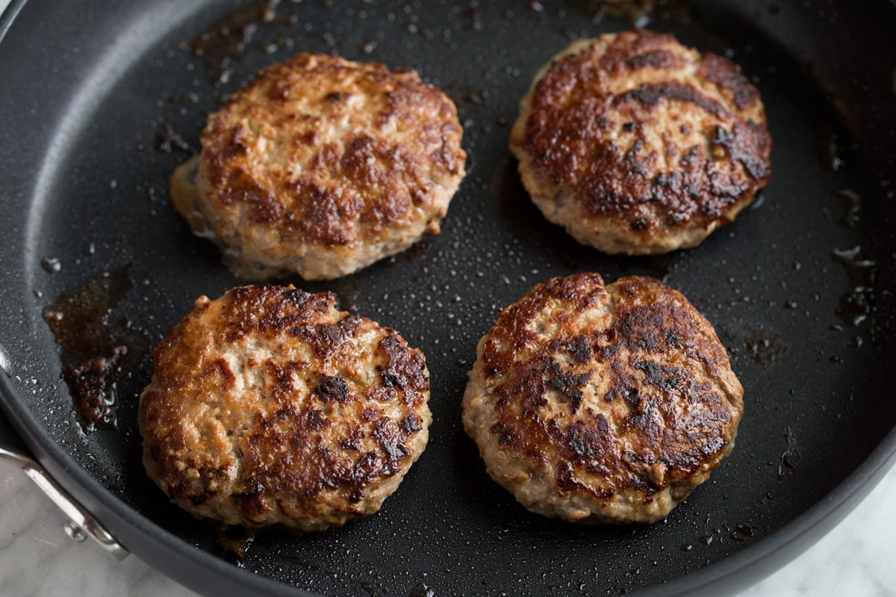

Turkey burger

Description
A turkey burger recipe made using raw ground turkey.
Ingredients
- ground turkey
- yellow onion
- garlic powder
- adobo seasoning
- salt
Steps
- Season ground turkey in bowl then mix.
- Take portions of the ground turkey and mold into ball.
- Set the balls aside and prepare pan heating on low.
- Cook/flatten balls on pan till brown and bloodless.
- Enjoy!
place ground turkey into bowl
* season until smells like the seasonings added
* take portions of mixed ground turkey and roll all of it into desired amount of balls
* heat pan on low and cook balls until brown and bloodless
* enjoy